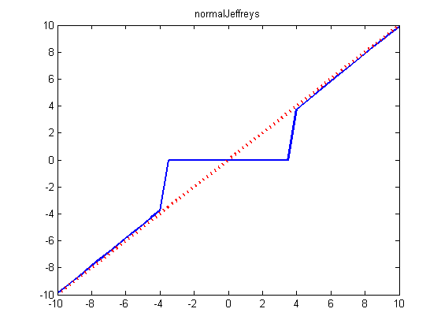
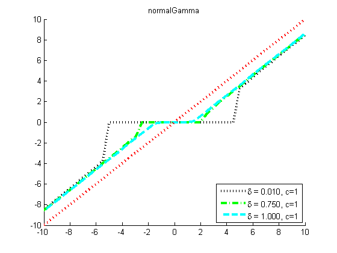
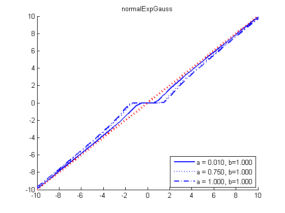

Contents
function normalGammaThresholdPlotDemo()
Threshold Plot Demo
z=-10:0.5:10;
x=-10.005:.05:10;
for k=1:length(z)
c=.001;
[temp outLap(k)]=min(.5*(z(k)-x).^2+c*abs(x));
deltas = [0.01 0.75 1];
for i=1:length(deltas)
delta = deltas(i);
[temp outNG{i}(k)]=min(.5*(z(k)-x).^2+normalGammaNeglogpdf(x, delta, 1)');
end
[temp outNJ(k)]=min(.5*(z(k)-x).^2+log(abs(x)));
if 0
deltas = [0.01 0.75 1 2];
for i=1:length(deltas)
delta = deltas(i);
[temp outNIG{i}(k)]=min(.5*(z(k)-x).^2+pen_NIG(x, delta, 1));
end
end
as = [0.5 0.5 0.5 5];
bs = [1 0.1 0.05 0.1];
as = [0.01 0.75 1];
bs = ones(1,4);
for i=1:length(as)
[temp outNEG{i}(k)]=min(.5*(z(k)-x).^2+normalExpGammaNeglogpdf(x, as(i), bs(i)));
end
end
[styles, colors, symbols] = plotColors();
figure;
plot(z,x(outNJ),styles{1}, 'linewidth', 2);
hold on
plot(z,z,'r:', 'linewidth', 3)
title('normalJeffreys')
printPmtkFigure('NJthreshold')
figure
hold on
for i=1:length(deltas)
plot(z,x(outNG{i}),styles{i}, 'linewidth', 2);
str{i} = sprintf('%s = %5.3f, c=1', '\delta', deltas(i));
end
legend(str, 'location', 'southeast')
plot(z,z,'r:', 'linewidth', 3)
title('normalGamma')
printPmtkFigure('NGthreshold')
if 0
figure
hold on
for i=1:length(deltas)
plot(z,x(outNIG{i}),styles{i}, 'linewidth', 2);
str{i} = sprintf('%s = %5.3f, c=1', '\delta', deltas(i));
end
legend(str, 'location', 'southeast')
plot(z,z,'r:', 'linewidth', 3)
title('normalInvGauss')
printPmtkFigure('NIGthreshold')
end
figure
hold on
for i=1:length(outNEG)
plot(z,x(outNEG{i}),styles{i}, 'linewidth', 2);
str{i} = sprintf('a = %5.3f, b=%5.3f', as(i), bs(i));
end
legend(str, 'location', 'southeast')
plot(z,z,'r:', 'linewidth', 3)
title('normalExpGauss')
printPmtkFigure('NEGthreshold')
  
end
function out = pen_NIG(w, delta, gamma)
tmp = sqrt(delta^2 + w.^2);
out = log(tmp)-log(besselk(1,gamma*tmp));
end